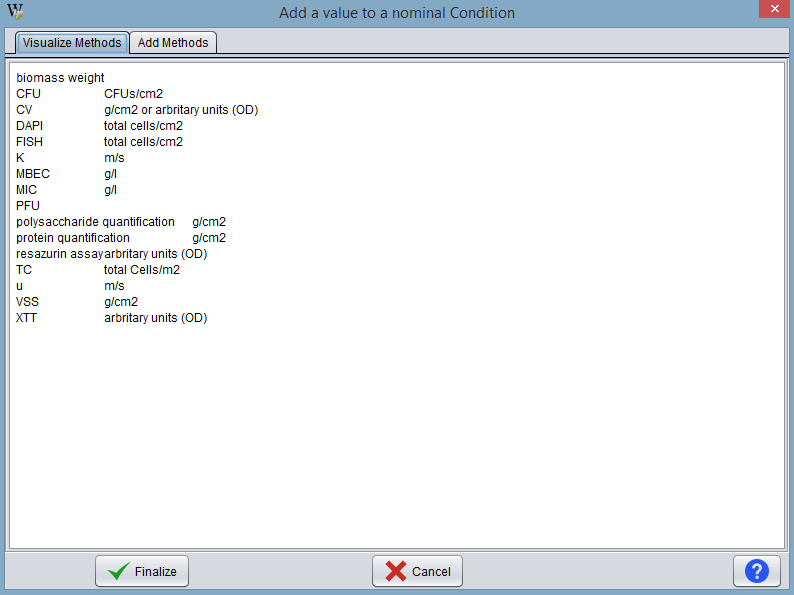
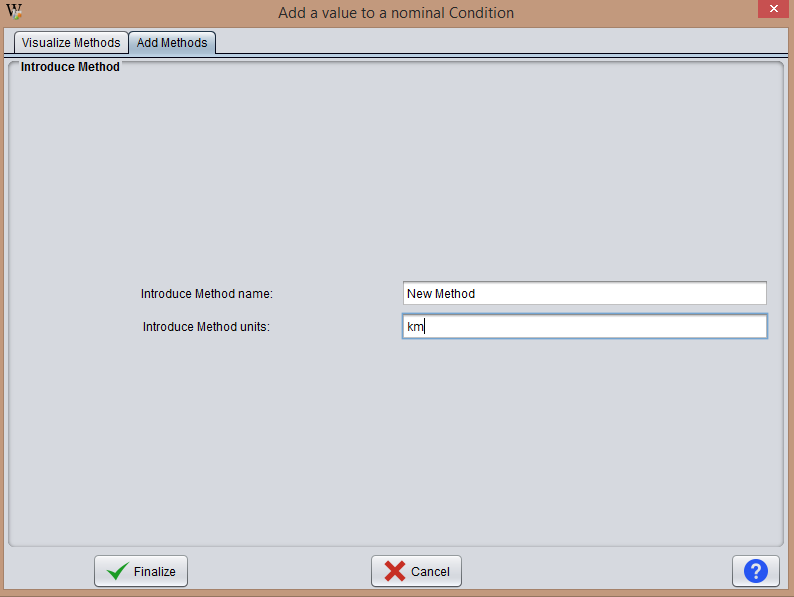

With this operation the user can add new method of analysis to BEW. Once the user press the icon for this functionality, the program displays a window like the one shown below:

To add a new method, the user must click in the Add method tab. Then, he can put the name and the units in the appropriate fields.
